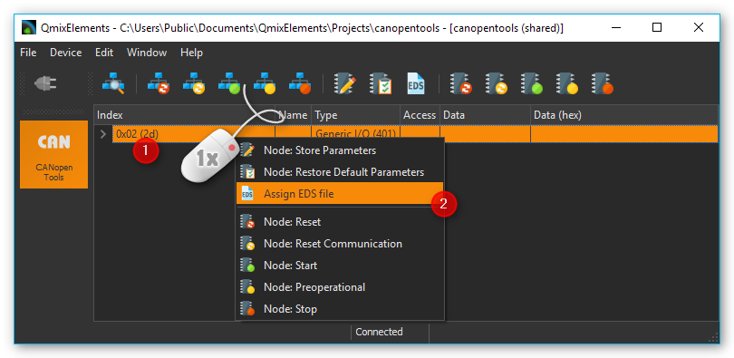

3. Qmix P / Q+ / Q- / TC and V Modules
3.1. Edit device parameters - Overview
To edit the device paramaters of the above mentioned Qmix devices you can use the QmixElements CANopenTools Plugin.
To open the CANopenTools Plugin, start the QmixElements software and select from the main menu the menu item .

Then select the configuration:

Connect your Qmix module to you BASE module and turn it on. Then click the Connect ❶ button in the QmixElements software and scan for connected devices ❷.

The software should detect the connected module ❶. Click with the right mouse button on the entry with the detected device and select Assign EDS File ❷ (see figure below).
Select the valid EDS file
ChipF40.edsfor the Qmix module from the existing EDS-files.You can now access all device and configuration parameters of the device:
Attention
Changing device parameters can cause malfunctions or cancel safety mechanisms. Only change device parameters as instructed by the technical support staff.